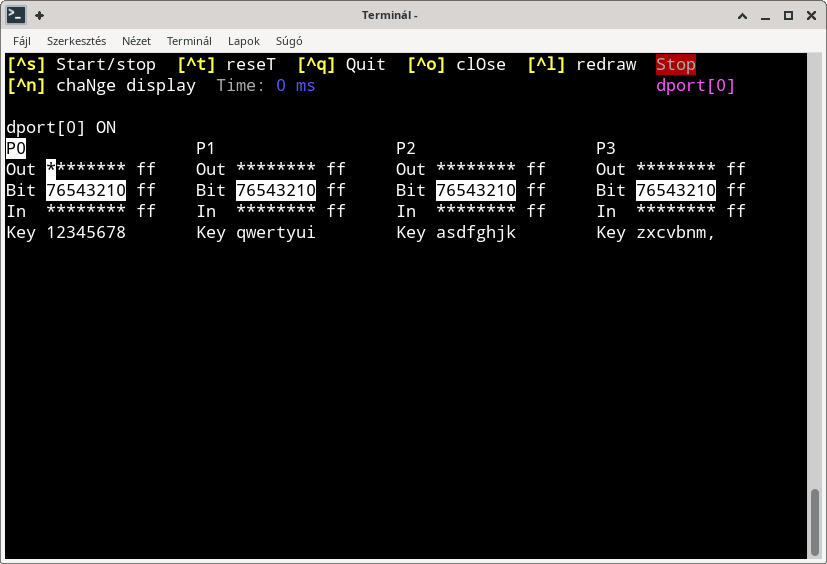
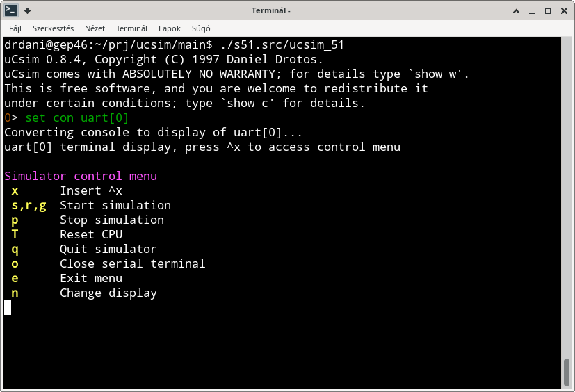
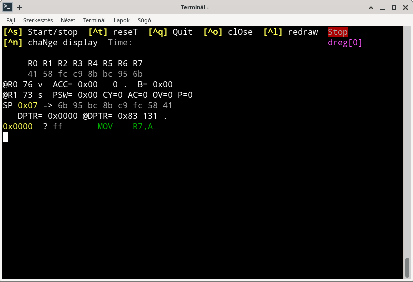

There are text based, interactive user intarfaces for simulated peripherals, which are called peripheral displays. They can be usefull for peripherals which can generate input data for the microcontroller, such as ports (GPIO), uarts. Some displays are used to show information in non-interactive way, for example dreg register display.
Peripheral display can be turned on using set console hw command where hw is the name of the peripheral.
0> conf
ucsim version 0.8.4
Type of microcontroller: C52 CMOS cmos
Controller has 14 hardware element(s).
on cpu[0]
on simif[0]
off vcd[0]
on timer0[0]
on timer1[1]
on uart[0]
on dreg[0]
on dport[0]
on port[0]
on port[1]
on port[2]
on port[3]
on irq[0]
on timer2[2]
0> set con dport

Each peripheral display interpret some control keys (a key pressed while CTRL is hold). They can be used to control the simulator, or the display itself.
Please note, that uart peripheral use a different display (see below) where control keys are not available by default, you have to press a hot-key first to display the simulator control menu.
Some peripherals can not be used to input external data into the system and do not have special display implemented. When you open display of them you will see the same information what you can check using info hw command.
10> i h irq
Interrupts are disabled. Interrupt sources:
Handler En Pr Req Act Name
0x000003 dis 0 no act external #0
0x00000b dis 0 no act timer #0
0x000013 dis 0 no act external #1
0x00001b dis 0 no act timer #1
0x000023 dis 0 no act serial receive
0x000023 dis 0 no act serial transmit
0x00002b dis 0 no act timer #2 EXF2
0x00002b dis 0 no act timer #2 TF2
Active interrupt service(s):
Pr Handler PC Source
Configuration memory of irq
0x00 00000001 . Turn ticking of this peripheral on/off (bool, RW)
10> set con irq

Display of any uart peripheral is spcial because it acts like a terminal emulator, connected to simulated uart. It doesn't have control menu like other displays, but you can show it by pressing a special escape key. This escape key is CTRL-x by default, but you can configure it.
$ ucsim_51
uCsim 0.8.4, Copyright (C) 1997 Daniel Drotos.
uCsim comes with ABSOLUTELY NO WARRANTY; for details type `show w'.
This is free software, and you are welcome to redistribute it
under certain conditions; type `show c' for details.
0> set con uart[0]
Converting console to display of uart[0]...
uart[0] terminal display, press ^x to access control menu

If the simulated uart sends a character (byte), it will be printed on the screen, so that how non-ascii charaters are shown is up to your terminal where the program was started.
Local echo is off, which means that key presses are not printed, they will be received by the simulated uart.
If you press the escape key, you will see the control menu, as shown on the above screenshot. Keys of the menu can be pressed alone or by holding CTRL down.
There is a variable which holds ascii code of the escape charater, to configure it you can set the appropriate variable. The variable is called
uartX_esc_char
where X is id number of the uart (there can be more than one uarts in the controller, distinguised by their id numbers).
CTRL ascii codes are between 0 and 31, so for example, if you are going to use CTRL-u, the easiest way to set it is:
0> expr uart0_esc_char='U'-'A'+1
21
0> set con uart[0]
Converting console to display of uart[0]...
uart[0] terminal display, press ^u to access control menu
Some CTRL combinations can be recognized by the operating system's terminal driver (for example ^z and ^c on linux), these conbinations are not recommended to use.
It is also not recommended to use characters (either alone or with CTRL) used on control menu, such as s, r, g, p, T, q, o, e, n.
Register set of the CPU is not a peripheral but could be usefull to show that as a display. To accomplish this, all simulators include a special "virtual" peripheral, called dreg, which, when displayed, shows the registers, the same way as the info registers command.
